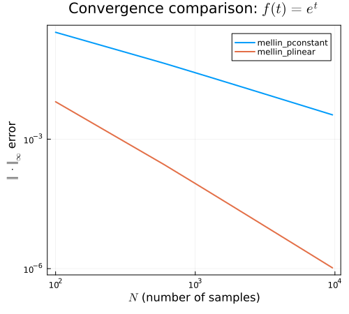

Benchmark
The functions mellin_plinear and mellin_pconstant estimate the Mellin transform of discrete time signals on the imaginary axis in frequency space. This estimate is derived by evaluating the continuous Mellin transform integral with an interpolation of the discrete data,
\[\mathcal{M}[f](s) = \int_0^\infty f(t) t^{s-1} dt = \sum_{i=1}^n f(t_i) \int_0^\infty B_i(t) t^{s-1}dt, \]
where $B_i(t)$ are the nodal basis functions of the interpolation.
We can compare the convergence rates of the piecewise constant and linear interpolation methods by comparing the absolute error in the predicted Mellin transforms. A comparison for the known Mellin transform pair,
\[f(t) = e^t, \qquad \mathcal{M}[f](s) = \Gamma(s),\]
is shown below.
using Plots
using LaTeXStrings
using DiscreteMellin
using SpecialFunctions
using LinearAlgebra
# Convergence test 1.
# Test function & transform
f = t -> exp(-t)
f_mellin = s -> gamma(s)
# Mellin space frequencies
ωs = range(0, 10, 100)[2:end]
ss = 1im * ωs
expect_mod = @. ss * f_mellin(ss)
# Convergence study
Ns = 100:500:10000
transforms = (mellin_pconstant, mellin_plinear)
study = map(Ns) do N
ts = range(0, 20, N)
fs = f.(ts)
return [
norm(transform(fs, ωs; step=step(ts), modified=true) - expect_mod, Inf)
for transform ∈ transforms
]
end |> stack
plot(
Ns, transpose(study);
title=L"Convergence comparison: $f(t)=e^t$",
xlabel=L"$N$ (number of samples)",
ylabel=L"$\Vert \cdot\Vert_\infty$ error",
labels=["mellin_pconstant" "mellin_plinear"],
xscale=:log10,
yscale=:log10,
linewidth=2,
size=(500, 450),
frame=:box
)